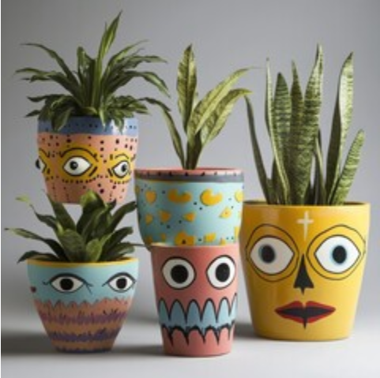

Task: Create your very own plant pot using old things you can find around the house, like plastic bottles, tin cans, or even coconut shells. Then, plant a special air-purifying plant in it! 🌱
Tip: Look for plants like Aloe Vera, Snake Plant, and Peace Lily. These plants are superheroes that clean the air for us! 🦸♂️🌿
Ready to become an eco-hero, Captain Green? Let's get planting and make our Earth smile! 🌍😊💚